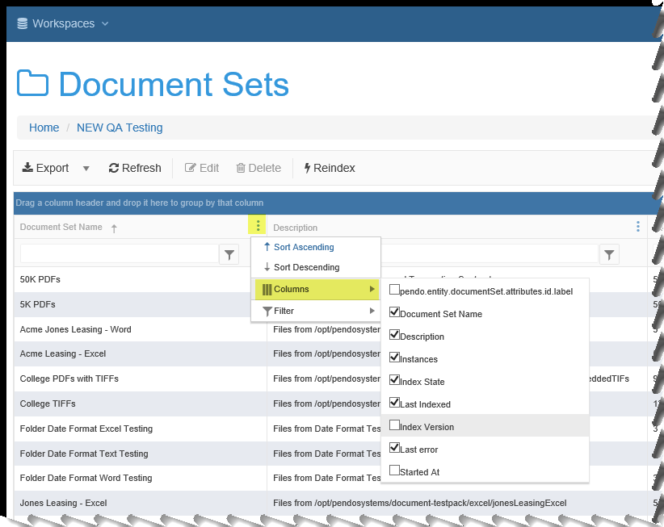
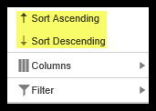
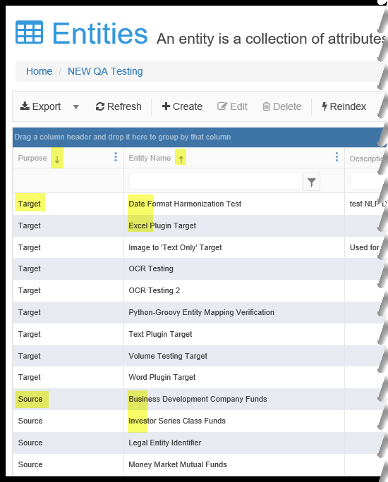
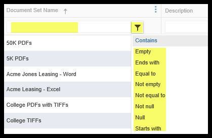
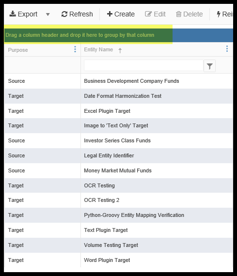
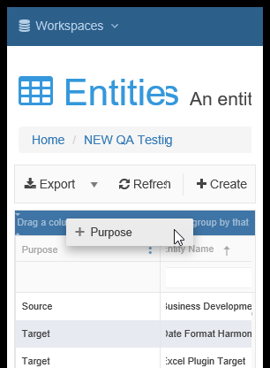
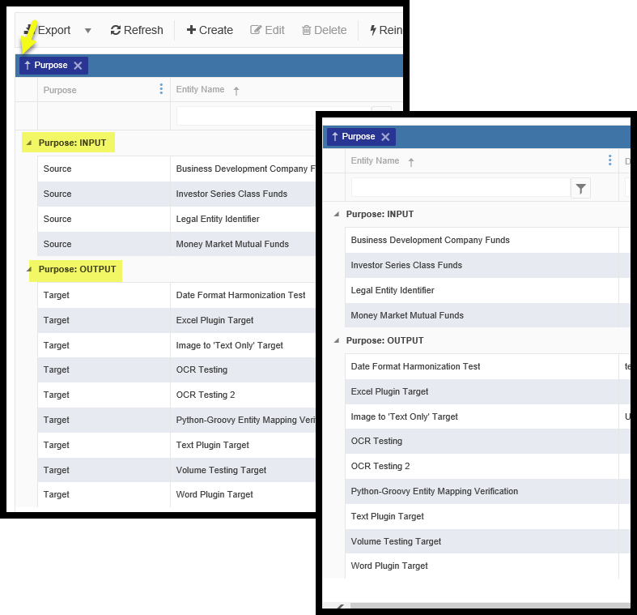
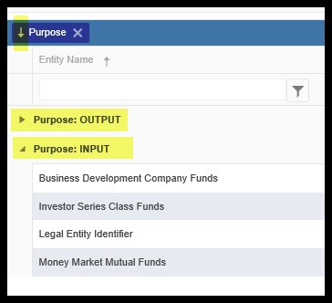

Detailed TOC for 'Appendix - All About Grids: Sorting, Filtering, Grouping and more.'
- Column Selection
- Column Sorting
- Column Filtering
- Column Width
- Grouping on a grid
- Number of Rows Displayed
- Date/ Time Columns in Grids
- Expected Functionality by grid column
Appendix - High Level Screen State and Behaviors
Users can select:
- Select to see certain columns from a list of columns are being displayed.
- Select columns on which to sort.
- primary, secondary, tertiary, etc. sorting as well as ascending/descending.
- Select certain Columns to 'Group By'.
- Adjust column widths when using a given grid. When you leave the grid, the columns return to default widths.
- When exporting data from a screen, the displayed state is exported (what you see is what you get, a.k.a WYSIWYG).
Column Selection
You may select which columns appear on your grid. Your available options will depend on the grid being viewed.
- Click on the icon in any column header to invoke a menu with many options. Select which sort method you want. *

- Select which columns you would like to see.
Column Sorting
most column can be sorted on. You can sort columns two different ways.
Sorting Method 1:
The first way is the simplest. Click on the icon in any column header to invoke a menu with many options.

- Select Sort Ascending or Sort Descending. The grid will only use the column selected by which to sort.
Sorting Method 2: Using the column header area, you can click just to the left of a column name to invoke sorting of a column. Sequence is important:
- There is a cycle of ascending ↑, descending↓, and no sort that goes in that order
- You may perform this on more than one column. The order you do this will dictate which column is primary, secondary, tertiary etc. For Example, you may want to sort first by a Date (descending so latest date is up top) and then a Name (ascending so that the rows are alphabetical)
Below, you can see the column ‘Purpose’ was sorted first and is in descending order. The column Entity Name was sorted second and is in ascending order. The column sorted fist makes it the primary sort, and column sorted second would make it the secondary sort.’.

Column Filtering
Many column can be filtered on to aid in a search or to limit results.
You can filter columns two different ways. Both methods have the same effect.
Filter Method 1:
Click on the 3 dots icon in a column header and follow that down to your filter options. Mouse over the right arrow by the word ‘Filter’ and select / enter your criteria. Note you can have more than column being filtered at the same time.

Filter Method 2:
Click on the Funnel icon, select a filter type and then enter the test in the box to the left of the funnel icon.
NOTE: Even though both methods are equivalent, we have added a special filter row to the header for each column that can be filtered and it comes with the funnel icon. This was done to make it very easy to see when one or more columns are being filtered. When we used only Method 1 and there was no filter row, it was not possible to see when a filter was in play.

Column Width
You may change the column width. As you paginate, the width you select will remain. HOWEVER, when you leave the grid, the column widths will revert to the default width. Move the cursor on the line in-between two columns. You will see the cursor change to: 
On the mouse, Left-click and hold - you may then drag the column divider to whatever size you desire.
Grouping on a grid
Many columns can be used to 'Group By' the grid. To group a grid by a column, drag each column header to the Group By area at the top. Any given grid may or may not have grouping set up as a default. The default groupings may be simple (one column) or more complex (maybe multiple columns or even requiring coding). In either case, new groupings can be made and default groupings can be dropped or modified.
Below you see a grid that has no grouping. The highlighted area does not show any column names and the instructions are straightforward.

Put your cursor over the column title and left-click drag to the grouping line as seen below.

Below you can see on the right that Purpose has been made a 'Group By'.
Hint 1: To save screen space, since you are grouping by one or more columns, you may wish to stop displaying those column(s) as seen below on the right.

Hint 2: Clicking on the triangle next to a grouped item will collapse/expand the rows for that particular group.
Hint 3: Clicking the arrow by the column in the Group by row at the top of the grid determines the sorting of the grouping.
Both of these ca be seen below.

Number of Rows Displayed
- Search Grids of Entities have a default of 20 rows. Options are 10, 20, 50 rows at a time with pagination. Note that sorting works and the results are against the entire result set, not just what you see on the screen. Just remember sorting 50 rows is a bit faster than sorting, 500,0000 rows.
- Non-Search Grids that are accessed via clicking on a component have a default display of 20 rows. Options are 5, 10, 20 or ALL rows.
Date/ Time Columns in Grids
Date/Time fields have two behaviors, depending on the screen you are on. This is expected behavior of the Platform, but could cause confusion for the User.
- In the Document Class ‘Mapping’ preview of data or the ‘Attachment Preview’ screens, the date and time will be formatted as specified, but will be sorted as string. Remember, this is just a preview, we have not actually moved the data to the Target Entity.
- AFTER an Attach has been run, if the date mapping was correctly formulated and is being saved to a properly date formatted Attribute, when you search on a Target Entity, the date data type is respected and true date/time sorting is supported.
Expected Functionality by grid column
| Component | Special Instructions | Sortable? | Sorting Exceptions | Filterable? | Filter Exceptions | 'Group By'? | 'Group By' Exceptions |
|---|---|---|---|---|---|---|---|
| Files and Folders main grid | N/A | Yes | N/A | Yes | Only: Name | No | n/a |
| Files and Foldersfolders-sub grid (click on any folder) | N/A | Yes | N/A | Yes | Only: Name | No | n/a |
| Uploads main grid | Turn on all possible columns by clicking the icon at the right of any column header | Yes | N/A | Yes | Not: Upload Date/Time | Yes | N/A |
| Remote Sources main grid | Turn on all possible columns by clicking the icon at the right of any column header | Yes | N/A | Yes | Only: Source Name, Attibute ID | Yes | N/A |
| Entities main grid | Turn on all possible columns by clicking the icon at the right of any column header | Yes | N/A | Yes | Only: Entity Name, Description, Attribute ID, Index Version, Index ID | Yes | N/A |
| Entities->Edit->History grid | Turn on all possible columns by clicking the icon at the right of any column header | Yes | ONLY Version Number is sortable | Yes | ONLY Version Number is filterable | No | N/A |
| Search screen - Entities | Turn on all possible columns by clicking the icon at the right of any column header | Yes | Not: Warning or Errors | No | N/A | No | N/A |
| Search screen Document Sets- Word | Turn on all possible columns by clicking the icon at the right of any column header | Yes | Only: Source Path | No | N/A | No | N/A |
| Search screen Document Sets- Excel | Turn on all possible columns by clicking the icon at the right of any column header | Yes | Only: Source Path | No | N/A | No | N/A |
| Search screen Document Sets- Text | Turn on all possible columns by clicking the icon at the right of any column header | Yes | Only: Source Path | No | N/A | No | N/A |
| Search screen Document Sets- OCR Images | Turn on all possible columns by clicking the icon at the right of any column header | Yes | Only: Source Path, Confidence | No | N/A | No | N/A |
| Document Set main grid | Turn on all possible columns by clicking the icon at the right of any column header | Yes | N/A | Yes | Not: Index State, Last Indexed, Last Error, Started At | Yes | N/A |
| Document Class main grid | Turn on all possible columns by clicking the icon at the right of any column header | Yes | N/A | Yes | Attachment State, Document Set State, Classification State, Last Classified | Yes | N/A |
| Document Class -> Main menu item 'Attach History' | N/A | Yes | User who Made Change | Yes Only: Version Number | No | N/A | |
| Document Class -> Edit->Mappings-> Mappings / Show Preview grid | N/A | Yes | Not: Errors, Warnings | Yes | Not: Index Date Time | No | N/A |
| Document Class -> Edit->Mappings-> Attachment Preview grid | N/A | Yes | Not: Errors, Warnings | Yes | Not: Index Date Time | No | N/A |
| Document Class -> Edit->Mappings-> History grid | N/A | Yes | Not: Errors, Warnings | Yes | Not: Index Date Time | No | N/A |
| Manage Users grid | Turn on all possible columns by clicking the icon at the right of any column header | Yes | Not Last Login | Yes | Not Last Login | Yes | N/A |
| Manage Organizations grid | Turn on all possible columns by clicking the icon at the right of any column header | Yes | N/A | Yes | N/A | Yes | N/A |
| Manage Workspace grid | Turn on all possible columns by clicking the icon at the right of any column header | Yes | Only:Workspace Name | Yes | N/A | Yes | Not: Description |
| Manage Roles main grid | Turn on all possible columns by clicking the icon at the right of any column header | Yes | N/A | Yes | N/A | Yes N/A | |
| Manager Roles->Edit->Permissions tab | Turn on all possible columns by clicking the icon at the right of any column header | Yes | N/A | Yes | N/A | Yes | N/A |
| Manage Groups main grid | Turn on all possible columns by clicking the icon at the right of any column header | Yes | N/A | Yes N/A | Yes | N/A | |
| Manage Groups - Edit - Users grid (popup) | Turn on all possible columns by clicking the icon at the right of any column header | Yes | N/A | Yes | N/A | Yes | N/A |
| Manage Groups - Edit - Roles grid (popup) | Turn on all possible columns by clicking the icon at the right of any column header | Yes | N/A | Yes | N/A | Yes | N/A |
| Plugins grid | N/A | Yes | N/A | Yes | N/A | Yes | N/A |
| API Endpoints Grid | Turn on all possible columns by clicking the icon at the right of any column header | Yes | N/A | Yes | N/A | Yes | N/A |